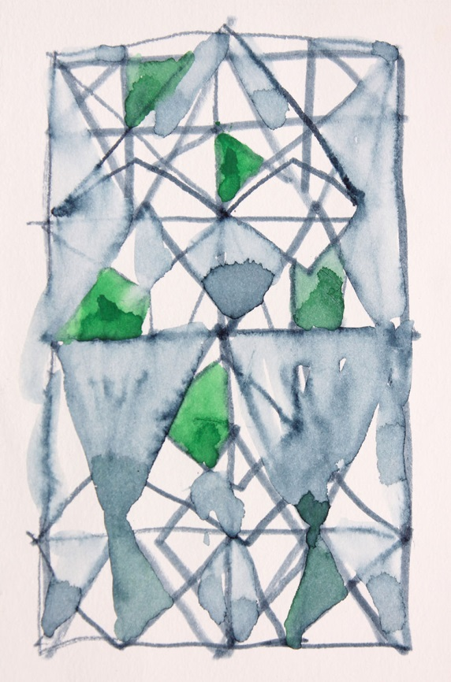

Понятие «структура» весьма широко. Его можно распространить буквально на все произведения природы и плоды человеческой деятельности. Структурой называют тот или иной порядок (закон) построения материального объекта или группы объектов. Выразительность того или иного зрелища часто зависит от порядка расположения в пространстве отдельных материальных тел. Например: посетители танцевального зала могут сгруппироваться в общий круг (хоровод), или образовать «цепочку», или разойтись парами, или танцевать соло, и т.д. Каждая такая сцена производит своё особое впечатление на зрителей (и на участников).
Иными словами, структура визуального объекта является средством выразительности, то есть языком, на котором художник высказывает свои мысли и чувства.
19 (2016)
На этом рисунке (назовём его «Представление») мы видим композицию из красных и чёрных штрихов на белом фоне. На первом плане (авансцене) выделяются три белые линии с красными пятнами в начале и конце. Назовём их условно: актёры, или солисты. Их фигуры не внушают симпатии: они раскачиваются и виляют в танце (мягко говоря, непристойном), их нагота неприкрыта; красные пятна свидетельствуют о «клубничке» в текстах их песен. Они откровенно и принципиально некрасивы (в духе андерграунда). Негативное впечатление от этих «актёров» поддерживается рисунком фона – хаотичным и истеричным конгломератом чёрных линий и пятен.
Суммируя все эти впечатления, можно сказать: здесь Художник выразил своё неприятие молодёжной антикультуры ХХ – ХХI века. Он сказал ей своё «фэ».
36 (2016)
В этом рисунке угадывается изображение двух современных высотных зданий, соединённых «переходным» блоком. Думаю, что здесь выражено (и осуждено) бесчеловечное начало современной урбанистики, которая даёт «клетку» для жительства миллионам людей, но приравнивает их к низшим существам, наподобие насекомых или микробов (муравейники, соты…) В этих огромных зданиях нет окон, у них нет прочной опоры (земля не видна), они опасно наклонились (готовы упасть), им не светит солнце (небо сплошь чёрное). Здесь царит бесчеловечный масштаб – гигантомания.
Эта геометрическая структура выглядит как нечто враждебное органической природе человека.
38 (2016)
Композиция более абстрактна по сравнению с предыдущими. В ней много пятен и линий самых различных очертаний. Можно назвать её «Базар житейской суеты». Думаю, что здесь кисть Художника двигалась почти бессознательно, автоматически. Он просто удовлетворял свою потребность поработать кистью с красками, отдыхая от напряжённой умственной деятельности, связанной с созданием плакатов. Хотелось «поиграть кистью» - пусть она сама выскажет, что у Мастера на душе: блекло-синий, линяло-розовый, вяло-зелёный или чёрный. Пусть формы пятен будут мелкими и несложными – как мысли в этот час отдыха от серьёзных работ (плакатов).
Такая живопись тоже нужна, чтобы нам, человекам, не возомнить слишком много о себе. Чтобы знать своё место в мире.
43 (2016)
Работа №43 резко отличается от всех других структур. Она построена по правилам классической геометрии, но без помощи измерительных инструментов, то есть «на глаз». Три чёрные фигуры должны вписываться в прямоугольник, состоящий из 12-ти квадратов. Однако, Художник не чертил под линейку, а рисовал. В эти минуты им владело желание строгости и порядка – в противоположность почти постоянному желанию полной свободы действий.
Смена технологических процессов и психических состояний – условие нормальной жизнедеятельности человека.
- «Так Зигфрид правит меч над горном:
- То в красный уголь превратит,
- То быстро в воду погрузит…»
- То в красный уголь превратит,
45 (2016)
Здесь мы видим пример чёткого конструктивного замысла «решетки» из двух слоёв. Такая конструкция позволяет выразить сложную мысль относительно простыми средствами: в каждом слое – своё сообщение. Они взаимодействуют между собой: подтверждают друг друга, уточняют или спорят, конфликтуют, детализируют… В данном случае задняя решётка (фоновая) утверждает ценность простых конструкций и типовых форм (горизонтальные полосы и зигзаги).
Второй слой этой композиции резко контрастирует с первым по масштабу, цвету, ритму и динамике, а главное – по смыслу. Он читается как некое слово на эзотерическом языке, или сложный знак, визуализирующий некий процесс – от начала и развития до упадка и гибели.
Знак состоит из 9-ти широких чёрных линий. Переномеруем их слева направо: №№ 1 – 9.
№№ 1, 2, 3, 4 – визуализируют нормальный ход и развитие какого-либо процесса.
№ 5 – обозначает стабилизацию процесса, ход его без изменений.
№ 6 – резкое снижение жизнеспособности данного явления.
№№ 7, 8 и 9 – убывание силы, болезнь и гибель, конец процесса.
Мысль, высказанную в этой работе, можно прочесть как «Закон и произвол», «Порядок и случайность».
Линии фона соблюдают горизонтальность и вертикальность (хоть и не очень точно). Однако, зигзаги между ними «танцуют» в сложном и капризном ритме: то гуще, то реже. Художник решительно не желает выглядеть «правильным». У него – стихийный бунт против правил и законов геометрии, а заодно – против принятых норм в «высоком искусстве».
62 (2016)
На рисунке мы видим (якобы) чертёж ограды для каких-либо хозяйственных нужд (выпаса птиц или мелкого скота, временного хранения стогов сена или строительных материалов, и т.д.). Присмотревшись, замечаем, что это «невозможная фигура». Этот «загон для скота» не имеет ворот; два передние звена ограды опасно перекосились; одна из линий, очерчивающих план – определённо лишняя. Такой «объект» может присниться в странном сне, но на первый взгляд он кажется обыкновенной сельскохозяйственной постройкой.
Не такие ли сюрпризы преподносит нам сама жизнь? Мы легко обманываемся и дезориентируемся в людях и обстоятельствах, принимая иллюзию за реальность.
66 (2016)
Эта работа – результат свободного, но не слишком весёлого «танца» руки с фломастером (или шариковой ручкой) по бумаге. Рука, не советуясь с разумом Художника, чертила всевозможные фигуры, фигурки и линии, повинуясь стихийным импульсам, идущим, как кажется, из глубин естества (или с Неба?). Если вам хочется что-нибудь нарисовать, а темы нет – рисуйте фигурки с этой работы Ю. Тореева (в произвольном порядке). Окончив это занятие, вы увидите, что у вас получилось совсем не так, как в оригинале. Попытайтесь понять, почему это так. Желаю вам успешно справиться с этой нелёгкой задачей.
77 (2017)
Редкий случай построения структур из треугольников. Конечно, все они разные, но все «живые», и каждый со своим характером (вполне в духе искусства Ю. Тореева). Общее настроение композиции – спокойное, но не без драматизма: существует ясный намёк на то, что этот покой будет вскоре нарушен. Геометрический центр листа (картины) занимает треугольник, покрытый чёрным облаком дыма. Возможно, вскоре произойдёт взрыв, и этот спокойный геометрический мир будет уничтожен.
86 (2017)
Сверхсложная структура, хотя и плоскостная. Двойной масштаб: фон составляют небольшие композиции в отдельных рамках, с рисунком в виде ряда вертикальных штрихов. Это как бы миниатюрные пейзажи – аллеи деревьев, ряды колонн, высокая трава… Центральную часть листа занимает загадочный знак на непонятном (или несуществующем ) языке.
Попытаемся понять его смысл: «Мир велик и разнообразен, а человек мал и слаб». Хотя можно и так: «Человек – это звучит гордо».
Что бы вы ни сказали – в этом будет доля истины. А полная истина – где она?
117 (2017)
Я бы отдала этой структуре первое место среди всех других. В ней есть движение времени, диалектика перехода от светлого к тёмному и от крупного к мелкому; есть неповторимость каждой «твари божьей» - двух одинаковых пятен здесь нет, и не ищите. Картина построена по принципу «Болеро» М.Равеля – давление звука постепенно увеличивается от начала к концу, достигая невыносимой силы. Это – сила Судьбы и Божественного предопределения. Сила неотвратимости того, что должно совершиться.
Эта работа – шедевр Мастера.
127 (2017)
Здесь мы видим «Вальпургиеву ночь», бешеную пляску насельников Ада, демонических существ, которых никто никогда не видел, но о которых так много написано, нарисовано и пропето. Это плод фантазии напуганного человечества, обречённого постоянно бороться с многочисленными бедами: голодом, болезнями, стихийными бедствиями, злобой чужих людей и предательством родных. Не только бороться, но и страдать.
Вы можете спросить: не слишком ли много негации в работах Ю.Тореева? Я отвечу: в Древней Элладе были два великих мудреца: Демокрит и Гераклит. Первый всегда смеялся, а второй плакал. Такое у них было «разделение труда». Учение того и другого дожило до наших дней и переживёт ещё много поколений, «потому что оно верно» (не нами сказано). Хорошо, что в нашем отечестве есть мудрый человек, видящий мир не через розовые очки, а таким, каков он (мир) есть, со всеми его светлыми и тёмными сторонами. Другого нам не дано.
121 (2017)
В этом рисунке мы видим следы движения руки Художника, отдыхающего от трудных проблем и негативных эмоций. Изображение напоминает чемодан (или большую сумку), наполненный второпях какими-то папками, картонками, газетами… Всё это нам знакомо и привычно, воспринимается не как абстракция, но почти как реализм. Вот свойство реализма: ты его гони в дверь, а он влезет в окно. И отменить его – не в наших силах.
130 (2017)
Работа подписана Художником – значит, достойна особого внимания. Я вижу в ней картину активной жизни, наполненной энергичными трудовыми ритмами – без праздников и каникул. Постоянное напряжение сил и нервов, вечная спешка, бешеная гонка. Хочется сказать: притормози, Человек! Остановись, оглядись, подумай… Конечно, эти советы адресованы не конкретно автору работы, а тому гипотетическому Человеку, который склонен поддаться жизненной суете и спешке.
155 (2018)
Композиция 155 – это, по существу, природная структура, то есть фрагмент травяного покрова земли. Здесь царит стихия Природы: формы разнообразны, линии хаотичны. Художник попытался внести в этот хаос некоторый порядок: композиция разделена на две половины светлым пятном, свободным от зарослей, а также большим чёрным пятном внизу. Рисунку придана симметрия – а это уже начало структурирования.
И всё же: почему Художник предпочитает свободные рукотворные формы закономерным естественным? (Наивный вопрос – ведь в мире своего искусства 0н полноправный Господин).
160 (2018)
Художник строит логичную и ясную конструкцию из двух прямоугольников и трёх «столбиков». Но почему-то третий столбик не удалось приладить к конструкции – да и форма его не подходит сюда. Конструкция осталась «недоделанной». В этом прочитывается глубокая (и верная) мысль: что бы ни делал Человек, дела его рук несовершенны, не вечны и уязвимы для критики.
Только божественные творения прекрасны. (Хочется добавить: а также произведения человека, вдохновлённого Творцом).
161 (2018)
Это апофеоз безобразия и прокламация анти-искусства. Эти каракули кричат: «Долой порядок и логику, традиции и эстетику! Художник! Делай, что хочешь!» Вдоволь налюбовавшись этим произведением свободного гения, я обратила внимание на подпись и дату под рисунком: 1апреля 2018 г. Всё понятно! Это первоапрельская шутка. Спасибо Вам, Юрий Александрович! Насмешили. Впрочем, во всякой шутке есть доля правды. И эта картинка кое-что верное говорит о жизни. Опять вспомним бессмертного Аристотеля и его изречение: «Говорить что-либо о жизни – то же, что стрелять из лука по открытым воротам: не попасть – невозможно».
172 (2018)
Работа отличается «высоким напряжением». Здесь много контрастов разного рода: объёмные тела и плоскости, крупные и мелкие формы, треугольники, круги, прямоугольники, спирали, конусы, пирамиды…
Но самое заметное – это цветовые контрасты: красное-зелёное и белое-чёрное. Композиция заряжена энергией, бодростью и динамизмом. Хочется запеть: «Мы кузнецы, и дух наш молод»… При этом вспоминается та эпоха и те годы, когда пели эту песню. Становится понятно, почему в картине так много чёрных штрихов, бесцеремонно вторгающихся куда не следует.
Бодрость и энергия – дело хорошее, но кому они служат – это, как говорится, другой вопрос.
179 (2017)
Эта структура – прямая противоположность предыдущей : массивная непробиваемая стена тюрьмы, концлагеря, гетто… Она ограждает место убийства миллионов людей. На её камнях нет надписей: она говорит внятно без слов. Здесь каждый камень – надгробный памятник.
Мир и покой на небесах жертвам бесчеловечных режимов!
184 (2018)
В такой лес привёл Иван Сусанин польских солдат на верную гибель. Такой пейзаж может возникнуть под кистью Художника в минуты и часы тяжёлых переживаний. Пусть их не будет в его жизни!
204 (2018)
Как поётся в одной оперетте: «Хватит страдать – будем плясать!». Рисунок № 204 – это вихрь трудовых дней с их энергией, суетой, весельем и мелкими заботами. Это «кусок жизни», содержательный и продуктивный, но без особо-крупных событий, запоминающихся навсегда.
Наверное, приятно делать работу, над которой не нужно думать?
211 (2018)
Здесь мы видим нечто утончённое и «эстетное», как ананасы в шампанском. Лёгкие прикосновения пера к бумаге создают иллюзии хрупких конструкций, готовых разлететься от дуновения ветерка - подобно «лёгкому флирту». Тонкие линии танцуют танго и фокстрот, не выходящие из моды, несмотря на множество новых изобретений в области бальных танцев.
«А Вова всё танцует, всё танцует, всё танцует…» (фокстрот 30-х годов).
228 (2018)
Композиция напоминает витраж с красными, тёмно-зелёными и чёрными стёклами. Уводит воображение от повседневности, напоминает романтику средневековья, органную музыку в полутёмном храме, причастие от крови Христовой… Велик диапазон мысли Художника!
232 (2018)
А иногда Юрию Торееву хочется стать «простым, как мычание» – ну, может быть, немножко сложнее. В таких случаях он покрывает лист бумаги несколькими короткими росчерками толстой кистью, а между ними (росчерками) рисует квадратики, прямоугольнички и кружочки – и всё это по белому фону. Нельзя сказать, что Мастер иногда «впадает в детство». А если и так – что же в этом плохого? Сказано ведь: «Истинно говорю вам, если не обратитесь и не будете, как дети, не войдёте в Царство Небесное». (Мф.18:3)
237 (2017)
Эта работа в своих линиях и красках воспроизводит ощущение трудовых будней с их размеренностью, монотонностью, однообразием и утомительностью. Бодрое сочетание красного с зелёным превращается здесь в «неравный брак» серовато-зеленоватого (в виде пятен) и розового (в виде штрихов). Кажется, Художник стремился добиться максимального антиэстетизма. Проще говоря: ни в коем случае не желал, чтобы его заподозрили в стремлении «сделать красиво». Думаю, что ему это удалось – но с грустью размышляю, почему такая интересная и богатая успехами жизнь Мастера не нашла должного отображения в его работах?
(Замечание из публики: - «Не притворяйтесь, что не понимаете. Это и ежу понятно: экзистенция»).
238 (2017)
Здесь жизнь строго регламентирована, сурово ограничена правилами, да ещё забрызгана чем-то чёрным. В такой «структуре» уже нельзя жить – разве только свершать последний путь к месту погребения. Иными словами, «сыграть в ящик».
245 (2017)
По замыслу и настроению эта работа похожа на № 237. Это череда напряжённых трудовых будней, в которых нет ни ярких впечатлений, ни тяжёлых эпизодов (и слава Богу).
257 (2017)
Я бы назвала эту работу «Весеннее утро». Это одна из немногих работ Ю.Тореева, внушающих (и отображающих) положительные эмоции: веселье, бодрость, оптимизм. Впрочем, рисунок свидетельствует: Золотой век ещё не настал, не слишком радуйтесь. Ещё не очень удачно собрана конструкция из стержней (точнее говоря – кое-как). Зелёные стёкла в этом витраже неодинаковы. Автор рисунка приложил немало усилий, чтобы это произведение было не похоже на проект витража; и он этого добился. Будем ему благодарны.

263 (2017)
Эту работу можно было бы назвать «свалка», или «куча». Я предлагаю более корректное название: «беспорядочная структура».
Впрочем, зададим вопрос: что такое беспорядок? Это, попросту, порядок, основанный на каком-то ином принципе (не традиционном). В данной работе автор придерживался принципа: располагать рядом вещи самой различной формы и назначения. Потому и интересно бродить взглядом по картине, встречая каждый момент что-то непонятное, или отдалённо знакомое. Кажущаяся неумелость рисунка всех этих вещей – на самом деле - художественный приём. Автор как бы сокращает дистанцию между собой и зрителем, который думает (или чувствует): «А ведь и я так могу…» На самом деле он так не может. Но пусть пробует!
Л. Миронова,
26.08.2018
https://www.facebook.com/groups/186926684654453/
https://vk.com/club22691156